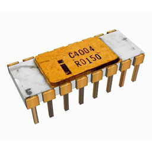
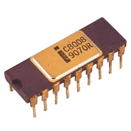
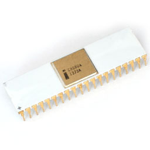
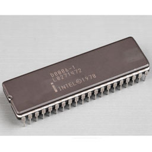
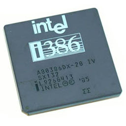
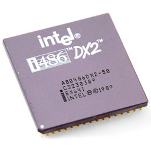
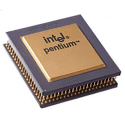
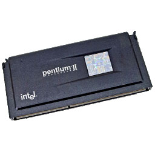
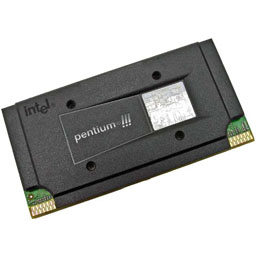

-

1971
1971年11月15日，Intel公司的工程师霍夫发明了世界上第一个商用微处理器—4004，从此这一天被当作具有全球IT界里程碑意义的日子而被永远的载入了史册。这款4位微处理器虽然只有45条指令，每秒也只能执行5万条指令，运行速度只有108KHz，甚至比不上1946年世界第一台计算机ENIAC。但它的集成度却要高很多，集成晶体管2300只，一块4004的重量还不到一盅司。这一突破性的发明最先应用于Busicom计算器，为无生命体和个人计算机的智能嵌入铺平了道路。
-

1972
1972年英特尔推出其8008微处理器时，业内的目光都几乎集中到了英特尔身上。8008频率为200KHz，晶体管的总数已经达到了3500个，能处理8比特的数据。更为重要的是，英特尔还首次获得了处理器的指令技术。8008它的性能是4004的两倍，拥有3500晶体管数量，速度为200KHz，并且于1974年被一款名为Mark-8的设备采用，Mark-8是第一批家用计算机之一，此时台式机基本上形成了一个最初雏形。
-

1974
英特尔公司于1974年推出了这款划时代的处理器，立即引起了业界的轰动。由于采用了复杂的指令集以及40管脚封装，8080的处理能力大为提高，其功能是8008的10倍，每秒能执行29万条指令，集成晶体管数目6000，运行速度2MHz。8080有幸成为了第一款个人计算机Altair的大脑。计算机爱好者花费395美元即可购得Altair套件。数月内，Altair的销售量达到数万台，造成了电脑销售历史上第一次缺货现象。这足以看出来8080对于电脑发展是具有划时代意义的。
-

1978
1978年，英特尔推出了首枚16位微处理器8086，同时生产出与之配合的数学协处理器8087，这两种芯片使用相同的指令集，以后英特尔生产的处理器均对其兼容。趁着市场销售正好的时机以及市场需求的提升，Intel在同年推出了性能更出色的8088处理器。三款处理器都拥有29000只晶体管，速度可分为5MHz、8MHz、10MHz。同时Intel成功将8088销售给IBM全新的个人计算机部门，1981年，IBM推出的首批个人电脑机选用了8088芯片，使得8088成为了IBM全新热销产品IBM PC的大脑。
-
1982
1982年2月1日英特尔80286上市，这是英特尔的最后一块16位处理器，具备16位字长，集成了14.3万只晶体管，具有6MHz、8MHz、10MHz、12.5MHz四个主频的产品。造成个人电脑的风行，在发布后的六年中，全球286的个人电脑一共出货了一千五百万台。它除了改善了一些指令的执行速度，同时也增加最大内存支持到 16 MB。
-

1985
Intel 80386是第一款用于个人电脑的32位中央处理器，集成了27万5千只晶体管，超过了4004芯片的一百倍，每秒可以处理500万条指令。同时也是第一款具有“多任务”功能的处理器，这对微软的操作系统发展有着重要的影响。
-

1989
1989年，英特尔发布了80486处理器，集成了125万个晶体管，时钟频率由25MHz逐步提升到33MHz、40MHz、50MHz及后来的100Mhz。486处理器的应用意味着用户从此摆脱了命令形式的计算机，进入“选中并点击(point-and-click)”的计算时代。史密森学会美国历史国家博物馆的技术历史学家David K. Allison回忆道：“当时我拥有了彩色计算机，并且以很快的速度进行桌面排版工作。”486处理器首次采用内建的数学协处理器，从而显著加快了计算速度。
-

1992
Intel Pentium处理器是Intel公司在1992年10月发布的第五代微处理器系列，该产品在1993年3月正式推向市场：Pentium处理器与以前的Intel公司处理器完全兼容，并有新的内容。值得一提的是奔腾处理器中有两条数据流水线，可以同时执行两条指令，Intel公司把这种同时执行两条指令的能力称为超标量技术。该技术使奔腾处理器能以每周期两条指令的速率更快地工作。
-

1996
Intel Pentium MMX处理器于1997年1月8日面向市场发布，等于是Pentium的加强版中央处理器，除了增加67个MMX（Multi-Media eXtension）指令以及64位数据总线之外，也将指令缓存和数据缓存从之前的8KB增加到16KB，内部工作电压降到2.8V。从这以后，英特尔的桌上型中央处理器皆包含了MMX指令。
-

1997
Intel Pentium II处理器于1997年5月7日推出。第一款具有Klamath内核的Pentium II拥有750万个晶体管、512 KB L2高速缓存，并使用0.35微米生产工艺制造。Pentium II内核基于Pentium Pro内核，但经过优化以显着加快运行16位代码的速度。它还支持Pentium MMX引入的MMX指令集扩展。采用Deschutes内核的第二代Pentium II处理器采用0.25微米生产工艺制造。基于新的工艺，从PII 350开始实现了100MHz的FSB而不是之前习惯的6MHz。
-

1999
Intel Pentium III处理器于1999年2月推出。第一款具有Katmai内核的Pentium III拥有950万个晶体管，一个512KB L2高速缓存，以1/2处理器时钟工作，制造工艺为0.25微米。使用100MHz 或133 MHz的FSB实现了从450到600MHz的时钟速率。以Coppermine为核心的Pentium III于1999年10月推出，凭借显着改进的架构，采用0.13微米生产工艺制造，256 KB L2高速缓存以全处理器时钟工作，PIII处理器首次超过了1GHz大关。
-

2000
Intel Pentium 4是英特尔公司于2000年11月发布的第7代x86微处理器，基于全新开发的“NetBurst”微架构。最初拥有4200万个晶体管，除了之前使用的MMX和SSE指令集外，还新增了144个新的SSE2指令。
历史是透视现实、预测未来的一面镜子。理清 CPU 的历史渊源、发展脉络，可以更好地把握现实，面向未来。CPU 收藏作为科技收藏的一部分，即将由小众收藏进入大众视野。收藏不仅是追寻历史轨迹，发掘真相，还原时代，更需要有深度的思想，有温度的情怀。
欢迎来到我的中央处理器博物馆，这里的 CPU 全部都我多年收集的，照片也是自己对实物的拍照。左侧的 收藏目录 大致按照品牌和推出的时间排序。
当初为什么会想收集 CPU 呢？因为一次偶然拆解 CPU 的机会，我被 CPU 的内部结构震惊了，这个复杂而精妙的小小集成电路芯片深深地吸引了我，从此我有了收集 CPU 的念头。目前我收藏的 CPU 有 14 种品牌，以 Intel、 AMD 和 Cyrix 三个品牌为主，大部分都是 x86 架构的古董 CPU，也有部分现代 CPU。
这些古董 CPU 诞生的年代，是一个高速增长的年代，充满了机遇、激情和挑战。与现在比起来，似乎有些令人怀念。虽然那时网络远没有普及，网速像蜗牛一样，但充满了神秘和自由。虽然那时的 CPU 速度很慢，但人的内心不焦躁。软盘的吱吱声，硬盘的咯咯声，光盘的呼呼声，调制解调器传出的来着“外星”的音符，激荡在本世纪初的时空里，回荡在我的内心深处。
其实在欧洲和北美，收集 CPU 的人越来越多，相关文件以及展示都非常齐全。您可以点击网页上方导航栏中的 Links 链接，访问到那些 CPU 网站。本站在建设的过程中，也参考了这些网站中的有关数据，在此表示感谢！
目前以实物形式详细介绍各类 CPU 的中文资料比较稀少。现实中拥有早期 CPU 产品的人也并不多，借此机会把我收藏的 CPU 展示出来，抛砖引玉，希望能有更多人参与进来，与我交流 CPU 的收藏经历。我收藏的每一颗 CPU 都有详细的参数介绍，如果您发现有错误的地方，还望能不惜赐教，在网页下方的评论区给我留言。
CPU 技术应该是人类发展史上最顶尖的发明了，它让人类文明乘上了快速列车！CPU 的大厦也是从简单的 4004 一步一步发展到如今的程度，每一步的变化都是有历史原因的，是有迹可循的。在 News 专栏中，收录了大量与 CPU 有关的各类文章，使我们更好的了解 CPU 背后的故事。
此外，在 Projects 中收录了近些年来我做过的一些主要软件工程，也算是作为自身的成长记录。